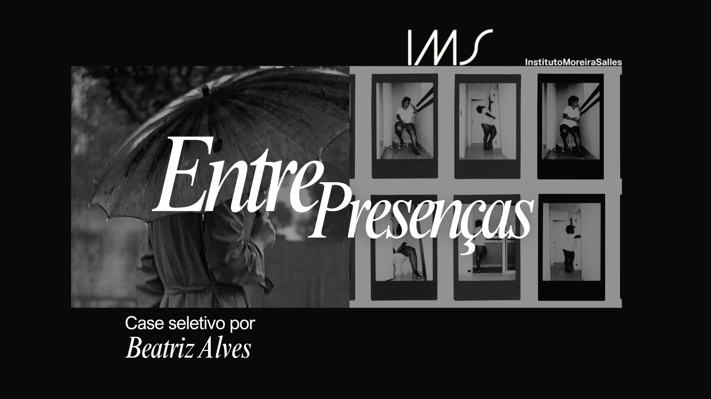
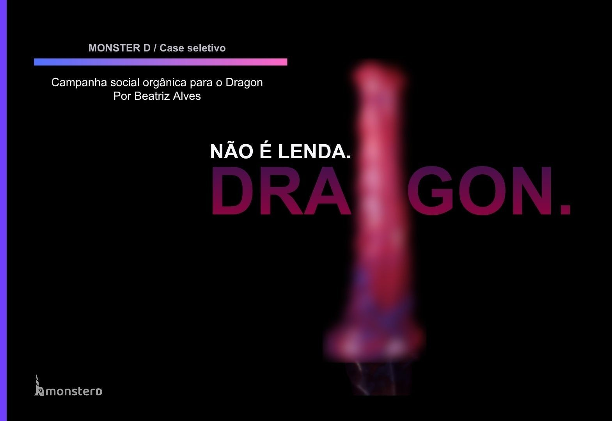
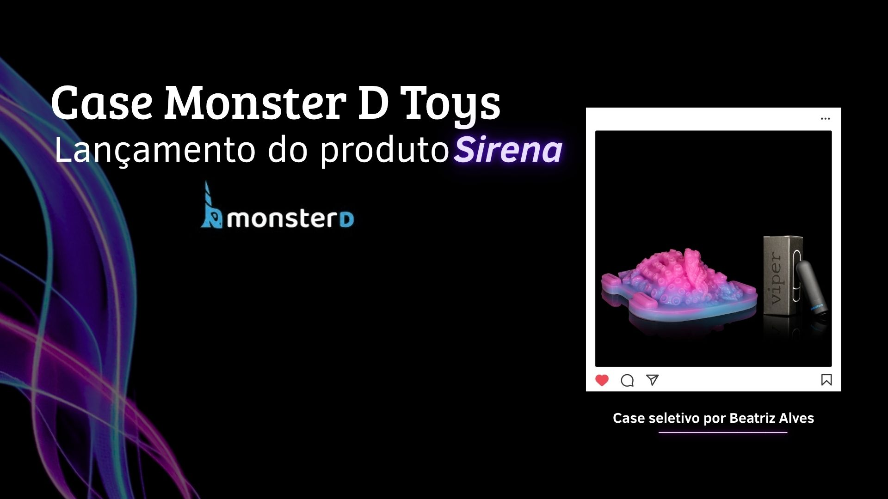
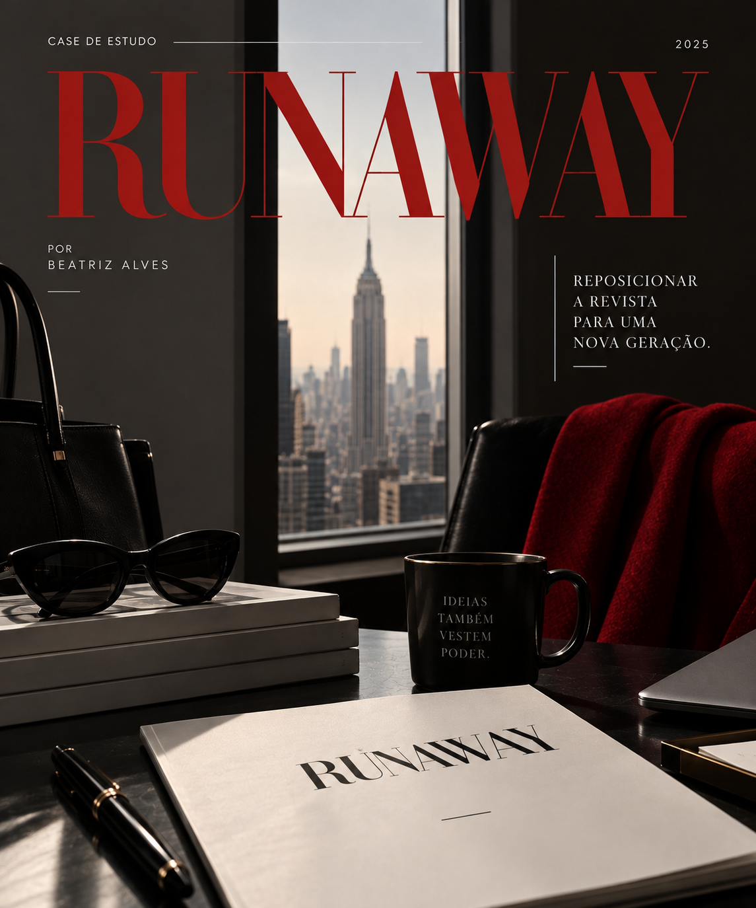

Descrição do projeto
Além do primeiro olhar.
Um case desenvolvido para explorar diferentes caminhos de comunicação a partir de pesquisa, análise e desenvolvimento de conteúdo. A proposta parte de um desafio e transforma informações em uma solução clara, coerente e pensada para seu contexto.
Objetivo
Investigar o problema apresentado, compreender suas possibilidades e desenvolver uma solução que conectasse pesquisa, conteúdo e intenção, considerando tanto a mensagem quanto a forma de apresentá-la.
Processo criativo
O desenvolvimento começou pela análise do desafio e pelo levantamento das informações necessárias. A partir disso, organizei os principais pontos, explorei possibilidades de abordagem e defini o caminho mais adequado para a proposta. Cada decisão foi construída considerando contexto, público e objetivo, até chegar à solução final.




Resultados
O resultado foi uma proposta estruturada que demonstra não apenas a entrega final, mas também o processo por trás dela — da pesquisa e análise inicial ao desenvolvimento e aplicação da solução.